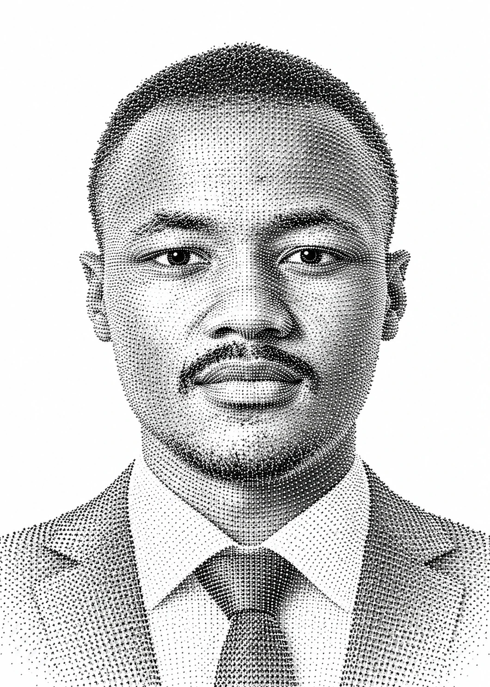

Open to SRE & platform roles
Michael
Nyandigisi
>
Senior Operations Engineer keeping production healthy for a regulated FinTech platform, and working towards a career in Site Reliability Engineering, cloud and containers.
$ kubectl get skills
| NAME | STATUS | AGE |
|---|---|---|
| monitoring | Running | 4y |
| health-checks | Running | 1y |
| docker | Running | 1y |
| kubernetes | ◐ ContainerCreating | now |
